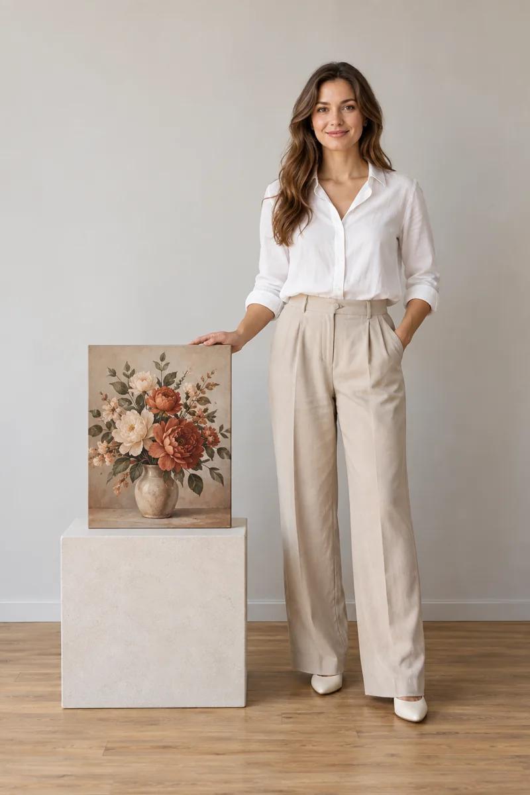

Парусник — живописный горизонтальный формат
3 изображения · пример стилизации · нажмите, чтобы рассмотреть
Картины по вашей идее
Парусник, цветы, абстракция или сюжет, который пока существует только в воображении. Предложим варианты и подберём картину под ваше пространство.
Обсудить картинуИИ-пример: вымышленный сюжет. Нажмите на изображение, чтобы рассмотреть.
Необязательно искать готовую картину. Расскажите, что вам нравится: море и парусники, спокойная ботаника, яркая абстракция или собственный сюжет. Можно прислать фотографию, набросок, подборку оттенков или просто описание в мессенджере.
На основе идеи предложим художественные варианты. Менять можно палитру, настроение, композицию и пропорции. Изображение готовится в цифровом виде и после согласования печатается на холсте; живописная фактура на примерах — часть стилизации.
Берём вымышленный снимок яхты и сохраняем главную идею: светлые паруса, тёмный корпус и море. В живописном варианте появляются тёплый свет и выразительные мазки. В графическом — лаконичные цветовые пятна и терракотовое солнце. Акварельный вариант получается более лёгким и воздушным.
Тот же сюжет по-разному работает в горизонтальном, квадратном и вертикальном формате. Сравните варианты ниже — каждую картину можно увеличить.
Разбор подготовлен на вымышленном примере с помощью ИИ. Интерьер показывает идею размещения; размер и оформление выбираются отдельно.
Горизонтальный холст можно примерить над диваном, вертикальный — в узком простенке, квадратный — над комодом. Для триптиха учитываем общий размер композиции вместе с промежутками между частями.
Уточняем сюжет, палитру, размеры и бюджет. Согласуем объём разработки.
Показываем разные решения в рамках вашей идеи. Дорабатываем выбранное и проверяем, как оно сочетается с интерьером.
После утверждения макета согласуем печать, оформление и доставку. Комплекты и нестандартные размеры рассчитываем отдельно.
Размеры и цены
Выберите размер — покажем, как он выглядит рядом с человеком. Визуализации помогают примерно оценить масштаб холста.

Универсальный формат для портрета или интерьерной картины. Подберём композицию под ваш сюжет.
Цена указана за один холст. Нестандартный формат, комплект из нескольких картин и сложную разработку сюжета согласуем отдельно. Багет и доставка — отдельно.
Картины по вашей идее
Три варианта парусника, вертикальная ботаника и абстрактный триптих. В каждой карточке — пример размещения в интерьере.
5 примеров
3 изображения · пример стилизации · нажмите, чтобы рассмотреть
3 изображения · пример стилизации · нажмите, чтобы рассмотреть
3 изображения · пример стилизации · нажмите, чтобы рассмотреть
1 изображение · пример стилизации · нажмите, чтобы рассмотреть
1 изображение · пример стилизации · нажмите, чтобы рассмотреть
Начнём с вашей идеи
Приложите фото комнаты, эскиз или понравившееся изображение. Расскажите о сюжете, цветах и месте для картины. Если пока есть только идея, обсудим её в MAX или Telegram.
Можно начать с нескольких слов: «Хочу парусник для светлой гостиной». Пришлите идею в чат — поможем определиться с направлением.
Цена указана за один холст. Нестандартный формат, комплект из нескольких картин и сложную разработку сюжета согласуем отдельно. Багет и доставка — отдельно.